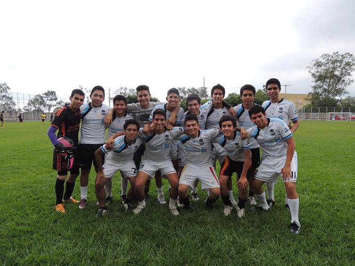
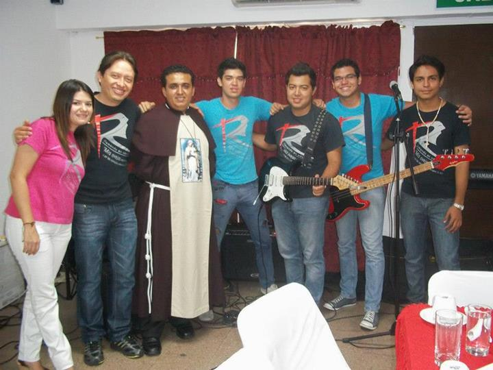

Descripción del autor
Gerardo Rafael Rodriguez pérez, estudiante de sistemas informáticos del Instituto Técnico Ricaldone, dedicado a mi oficio por el gusto y la gracia que le encuentro a este; actualmente, cursando el programa PILET en conjunto con la Universidad Don Bosco de El Salvador.
Me apasiona el fútbol y también los instrumentos musicales. Jugar o ver el deporte puede ser un entretenimiento, la música es un poco más que eso: la disfruto, me gusta apreciar cada detalle, cada sonido, la bastedad de colores que puede generar cada instrumento. 
Aprendo todos los días a tocar la guitarra y piano, digo "aprendo" porque jamás se deja de aprender; quien crea que ya lo sabe todo, aún no sabe nada.
Por último, cada dedico con mucho entusiasmo estos dones que me ha dado Dios sirviendo en mi iglesia,
alabando y motivando a alabar :)

Valoración del curso
A lo largo del desarrollo de esta materia, se aprendieron muchos conocimientos; no es una materia sencilla puesto que es un lenguaje orientado a la web, esto quiere decir que tiene sus complicaciones pero también, posee una gran cantidades de herramientas para trabajar, como los son los muy utilizados frameworks. En lo personal, se me dificulta esta materia, pero poco a poco fui mejorando y encontrando el "sabor" de esta. Lenguaje Interpretado por el Cliente (LIC) un inicio del mundo de lo orientado a la web.